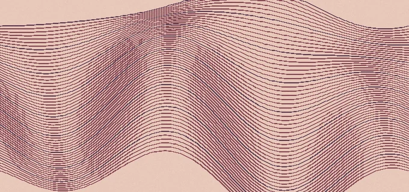

I designed three-token identifiers that encode a place’s location and category. The updated retrieval model cut average inference time from 56 ms to 32 ms.
Machine learning engineer
Zhibin Hao.
I build recommender systems and AI products, and study how images can carry invisible watermarks.
Explore my workSelected work
Recommending nearby placesA faster way to retrieve local recommendations.

Invisible image watermarksEmbedding a signature during diffusion.
I studied how to embed a watermark during image generation and detect it after editing. This work was published at Computer Graphics International 2025.
Learning what comes nextGenerating product recommendations with semantic IDs.
I reproduced an open-source recommendation pipeline and tested rule-based and ranking rewards on the Amazon Industrial dataset.
Designing for dialogueAn AI interviewer and a healthcare support chatbot.
I worked as a product manager on two conversational tools, one for conducting interviews and one for answering healthcare customer inquiries.
About me
I’m a master’s student at Tsinghua University. At Amap, I worked on how models recommend places nearby. My research now looks at what happens to an image’s watermark when someone edits the image.